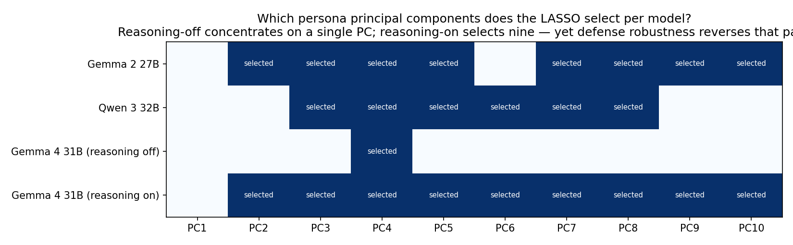
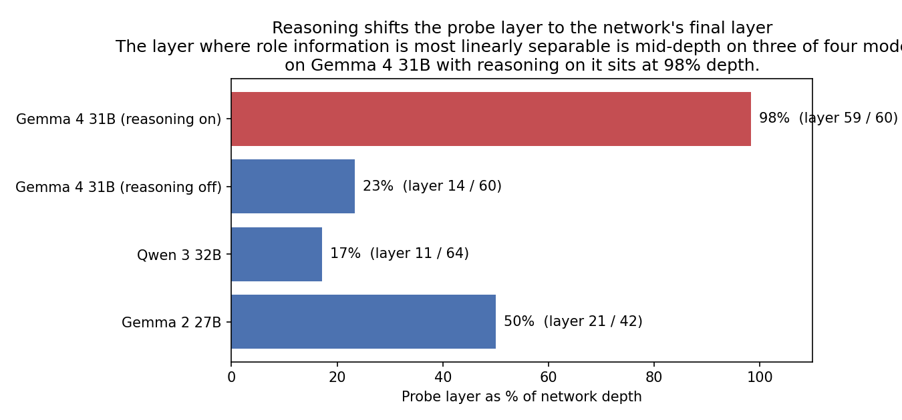
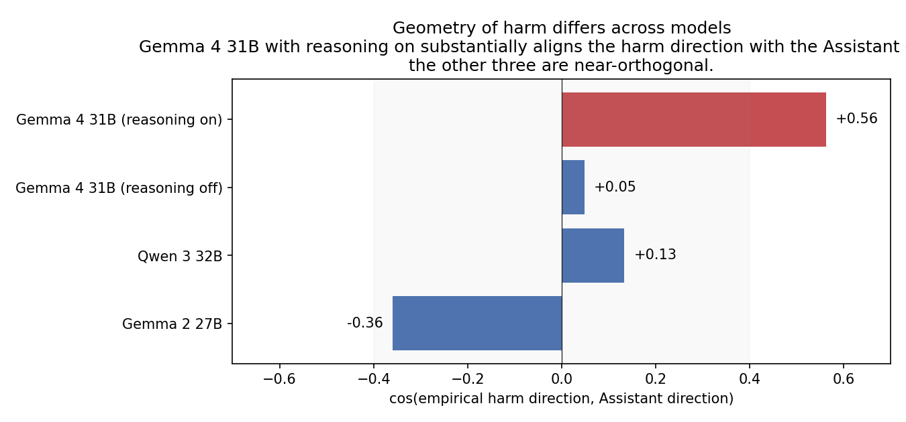

Multi-Axis Persona Safety
Replicating Lu et al.'s Assistant-Axis activation cap on four open-weight models — and asking whether the residual stream under jailbreak still encodes harm-relevant signal in directions the cap ignores. The signal replicates universally; defense robustness does not — on one model the cap fails outright at zero attack and is adversarially exploited for a +12-point harm-rate increase at near-perfect coherence.
Why this work
Lu et al. (arXiv 2601.10387, The Assistant Axis) propose a single-direction activation-level defense for persona jailbreaks. They identify a direction in the residual stream — the Assistant Axis (AA), ≈ PC1 of a 275-role activation PCA — and show that capping the projection of activations along AA reduces harmful-information extraction across several frontier open-weight models.
The open questions this work asks: does the residual stream under jailbreak still encode harm-relevant information in directions orthogonal to the Assistant direction, and does that pattern travel across models, architectures, and reasoning configurations? If the orthogonal signal is real and adversarially exploitable, the single-axis cap has a structural blind spot — it can be defeated by an attacker steering along the directions the cap ignores. If the picture is uniform across models, defense recommendations transfer cleanly; if it is heterogeneous, a deployable defense needs to know which regime it is in.
Pipeline validation
Before reporting findings beyond the paper, four checks confirm this is a faithful instance of Lu et al.'s methodology on each of the four models:
- PC1 ≈ the Assistant direction replicates on every model tested. Paper's cross-model threshold for PC1/Assistant-direction agreement is 0.71. Per-model values: Gemma 2 27B 0.88, Qwen 3 32B 0.90, Gemma 4 31B reasoning-off 0.82, Gemma 4 31B reasoning-on 0.82. PCs are fit on each model's own role-vector cache; the Assistant direction is computed via the contrast-vector recipe (
mean(default_assistant) − mean(role_playing)) per paper §3.1. - The cap defense replicates direction on three of four models. The Assistant-direction cap reduces baseline harm rate by 13.0 pp on Gemma 2 27B, 6.2 pp on Qwen 3 32B, and 9.9 pp on Gemma 4 31B with reasoning on. The exception — Gemma 4 31B with reasoning off, where the cap slightly increases harm at zero attack — is the headline divergence and is detailed below.
- Coherence is preserved at the operating point. Across the four models, the Assistant-direction-capped models retain 87–100% coherent (non-nonsense) outputs at the operating threshold, with no model in the catastrophic-coherence-loss regime that would degrade harm-rate measurements.
- Harm-judge protocol matches the paper verbatim. Nine-category prompt from Appendix D.2.2; binarization rule (
enough_info ∪ enough_info_and_follow_perfectly → harm=1) per the paper. Judge model is Qwen 3.6 27B (in place of paper'sdeepseek-v3per project budget); validated against GPT-5.5 on a 200-sample stratified subset of the Gemma 2 27B run at 93% binary agreement (paper's reference is 91.6% deepseek-v3-vs-human).
What this study found
- The orthogonal-to-Assistant-direction harm signal replicates across all four models. Adding the leading persona principal components to a logistic LASSO lifts harm-prediction AUC by +0.10 to +0.31 over the Assistant-direction-alone baseline; every 95% BCa CI excludes zero. The blind spot Lu et al.'s single-direction cap leaves behind is a general feature, not a Gemma 2 27B artifact.
- The cap defends in three of four models — and outright fails in the fourth. On Gemma 4 31B with reasoning off, the Assistant-direction cap increases harm at zero attack (10.2% → 11.2%) and a single harm-aligned principal-component attack lifts harm to 23.6% at 99.8% coherence — a +12.4 percentage-point adversarial recovery on the headline mitigation. Qwen 3 32B and Gemma 4 31B with reasoning on resist all attacks tested at coherence-preserving steering magnitudes. The number of LASSO-selected components does not predict robustness (reasoning-on selects nine components and defends; reasoning-off selects one and fails).
- Extended reasoning reorganizes the safety geometry. With reasoning on, the probe layer where role information is most linearly separable shifts from middle depth (~20%) to the network's final layer (98% depth); the Assistant direction alone becomes a much stronger harm classifier (AUC 0.81 vs 0.58 with reasoning off); and the empirical harm direction becomes substantially aligned with the Assistant direction (cos = +0.56) where it is near-orthogonal in the other three models (cos ∈ [−0.36, +0.13]).
The takeaway: the orthogonal-to-Assistant-direction blind spot is a general feature of role-conditioned residual streams, not a single-model artifact — but defense behaviour around it is heterogeneous, and a recommendation that holds on three of four models can fail on a fourth in a way that is not just incomplete but adversarially exploitable.
What replicates across all four models
The orthogonal harm signal is universal
Across the four models, fitting a logistic LASSO over {Assistant-direction, top-10 persona PCs} at each model's probe layer yields a harm-prediction AUC strictly greater than the Assistant-direction-alone baseline. Lifts range from +0.10 on Gemma 4 31B with reasoning on (the smallest gap) to +0.31 on Qwen 3 32B (the largest), with 95% BCa CIs excluding zero on every model. The blind spot Lu et al.'s single-direction cap leaves behind is a general feature of role-conditioned residual streams.
Per-model details: Qwen 3 32B sits at AUC 0.628 → 0.930 (lift +0.312, CI [+0.214, +0.415]; LASSO selects PC3–PC8). Gemma 4 31B with reasoning off sits at 0.576 → 0.866 (lift +0.295, CI [+0.191, +0.406]; LASSO selects PC4 alone). Gemma 4 31B with reasoning on sits at 0.813 → 0.905 (lift +0.101, CI [+0.051, +0.155]; LASSO selects PC2–PC10). Gemma 2 27B from the original study sits at 0.728 → 0.967 (lift +0.240, CI [+0.209, +0.273]; LASSO selects PC2, 3, 4, 5, 7, 8, 9, 10).

The cap defends in three of four models
Capping projections along the Assistant direction at the role-positive 25th percentile reduces baseline harm rate on three of four models — by 13.0 pp on Gemma 2 27B (14.8% → 1.8%), 6.2 pp on Qwen 3 32B (8.6% → 2.4%), and 9.9 pp on Gemma 4 31B with reasoning on (15.0% → 5.1%). On the same three models, all harm-aligned principal-component and empirical-harm-direction attacks tested at coherence-preserving steering magnitudes recover at most +1.4 pp above the defended baseline. The fourth model, Gemma 4 31B with reasoning off, is the exception — flagged below.
Where the four models diverge
Gemma 4 31B with reasoning off — the cap fails and is exploitable
Two failures stack on this model. First, applying the Assistant-direction cap at the role-positive 25th percentile pushes binary harm rate from 10.2% to 11.2% — a 1.0 pp increase at zero attack. The defense paper's headline mitigation slightly worsens harm on this model. Second, on the cap-defended model, a single harm-aligned principal-component attack recovers harm decisively: steering along the harm-aligned direction of PC3 at λ=0.25 lifts harm to 23.6% at 99.8% coherence — +12.4 percentage points above the defended baseline, with the model continuing to produce coherent, on-topic, in-distribution responses while being adversarially driven past the defense. A null-space attack at the same λ reaches 18.7% at 99.0% coherence (+7.5 pp).
A non-obvious property of this failure: the LASSO selected only PC4 as a non-zero feature on this model, yet the most successful attack steers along PC3. Predictive feature selection and adversarial exploitability are dissociable here — carried forward as Q6 below.
Gemma 4 31B with reasoning on — different geometry, same conclusion
Same model weights as above, with extended-reasoning mode toggled on. Three things change. First, the probe layer where role information is most linearly separable shifts from layer 14 of 60 (~23% depth) to layer 59 of 60 (98% depth) — effectively the network's final layer.

Second, the Assistant direction alone becomes a much stronger harm classifier on this model — AUC 0.81 vs. 0.58 with reasoning off — and the residual blind spot shrinks correspondingly (lift +0.10 vs +0.30 with reasoning off). Third, the empirical harm direction (the difference of mean activations between harm-positive and harm-negative prompts at the probe layer) becomes substantially aligned with the Assistant direction (cos = +0.56), where it is near-orthogonal in the other three models.

The defense behaves accordingly — the Assistant-direction cap is robust on this model (−9.9 pp at zero attack; the strongest harm-aligned PC2 attack at λ=0.25 recovers only +1.4 pp). The framing: extended reasoning concentrates the safety-relevant geometry into the Assistant direction, the residual blind spot shrinks, and the cap that holds elsewhere holds here too.
Qwen 3 32B — most robust defense observed
Despite carrying the largest blind-spot AUC lift among the four models (+0.31), all four attack classes — harm-aligned PC2, harm-aligned PC3, the empirical harm direction, and a null-space attack — fail to recover any harm above the cap-defended baseline at λ ∈ [0.15, 0.25]. Coherence stays above 97% on every harm-aligned attack and above 90% on the null-space attack. The framing: the cap is geometrically near-complete on this model at the steering magnitudes tested. Whether stronger attacks at higher λ would succeed before coherence collapse is open.
Headline numbers — across models
| Metric | Gemma 2 27B | Qwen 3 32B | Gemma 4 31B (reasoning off) |
Gemma 4 31B (reasoning on) |
| Probe layer / network depth | 21 / 42 (50%) | 11 / 64 (17%) | 14 / 60 (23%) | 59 / 60 (98%) |
| cos(PC1, Assistant direction) at probe layer | 0.88 | 0.90 | 0.82 | 0.82 |
| Baseline harm rate (no defense) | 14.8% | 8.6% | 10.2% | 15.0% |
| Refusal rate at baseline | 41.4% | 71.2% | 77.2% | 77.6% |
| Cap-defended harm rate (Assistant-direction cap) | 1.8% | 2.4% | 11.2% | 5.1% |
| Cap Δharm vs baseline | −13.0 pp | −6.2 pp | +1.0 pp (fails) | −9.9 pp |
| AUC(Assistant direction only) | 0.728 | 0.628 | 0.576 | 0.813 |
| AUC(Assistant direction + persona PCs) | 0.967 | 0.930 | 0.866 | 0.905 |
| AUC lift Δ [95% BCa CI] | +0.240 [+0.21, +0.27] | +0.312 [+0.21, +0.42] | +0.295 [+0.19, +0.41] | +0.101 [+0.05, +0.15] |
| LASSO-selected components | PC2–5, 7–10 | PC3–PC8 | PC4 only | PC2–PC10 |
| cos(empirical harm direction, Assistant direction) | −0.36 | +0.13 | +0.05 | +0.56 |
| Best harm-aligned attack on defended model | v_harm @ λ=0.10 | PC2 @ λ=0.15 | PC3 @ λ=0.25 | PC2 @ λ=0.25 |
| Best-attack harm rate | 14.6% | 0.6% | 23.6% | 6.5% |
| Best-attack Δ vs cap-defended baseline | +12.8 pp | −1.8 pp (fails) | +12.4 pp | +1.4 pp |
| Coherence at best attack | 76.7% | 98.6% | 99.8% | 99.6% |
| n prompts (probe analysis / attack arm) | 500 / 500 | 500 / 508 | 500 / 508 | 500 / 508 |
Bold cells flag the divergent model. Probes use the DAN-jailbreak prompt distribution; the empirical harm direction is computed at each model's own probe layer. Per-model dose-response curves and full per-attack tables are in the receipts.
Deep dive: Gemma 2 27B
The remainder of the page gives the original single-model trace on Gemma 2 27B — pipeline validation, the cap-and-attack outcomes that motivated the cross-model study, and an extension sweep covering cross-dataset replication on Shah-reconstructed prompts, the empirical-harm-direction decomposition, a sign-corrected per-axis attack arm, and a multi-axis defense interaction matrix. These four extension analyses are run on Gemma 2 27B only; cross-model replication of each is the natural next step.
The defense and what it leaves behind
enough_info ∪ enough_info_and_follow_perfectly; DAN, n=500 per condition) across six conditions: unsteered baseline (14.8%), AA-capped at layers [33, 38] with τ calibrated to the role-positive p25 (1.8%), AA-cap composed with PC2/PC3 steering at λ=0.25 (0%), and AA-cap composed with two random-direction baselines at λ=0.25 (0%). Error bars are BCa 95% CI (10,000 resamples).
Per-condition coherence (judged nonsensical rate, complementary to intelligible-response rate): baseline 0.2%, AA-cap 8.6%, +PC2 attack 67.2%, +PC3 attack 44.0%, random×2 attacks 100%. The 0% harm rate under PC attacks therefore reflects two compounded effects: (a) the cap suppresses harmful information across the coherent fraction and (b) the steering perturbation degrades coherence so there is less coherent text to be judged. Random-direction attacks at λ=0.25 collapse model coherence entirely — the random-vs-PC contrast at this λ is degenerate; a coherence-matched random-direction sweep at lower λ is in the next-phase plan.
Behavioural bypass: refusal-style erasure under PC attack
Under AA-cap alone, the model refuses jailbreak prompts in an explicit Assistant register — "I cannot", "I'm sorry", "not appropriate", and similar phrases (a fixed regex of explicit-refusal patterns). Under PC2 and PC3 attacks at the same λ that left random attacks producing only nonsense, the explicit refusal register collapses while the model remains coherent.
| Condition | Refusal-kw (full) | Refusal-kw (coherent only) | Coherence |
| baseline | 41.4% | 41.5% | 99.8% |
| AA-cap | 79.0% | 86.4% | 91.4% |
| AA-cap + PC2 (λ=0.25) | 18.0% | 54.9% | 32.8% |
| AA-cap + PC3 (λ=0.25) | 3.6% | 6.4% | 56.0% |
| AA-cap + random (λ=0.25) | 0.0% | — | 0.0% |
The bypass is real, especially under PC3, but is partly attributable to coherence loss: when 67% of PC2-attack responses are nonsense, the raw refusal-keyword rate must drop. The coherence-adjusted column controls for this. Even so, PC3 stands out: 56% of the model's responses remain coherent under attack, but only ~6% of those coherent responses use explicit refusal phrasing. Inspection of the coherent non-refusal non-harmful PC3 responses shows them clustering as evasive deflections and partial-information replies rather than off-topic noise — suggesting PC3 governs something like commitment-to-refusal-as-a-stance rather than topical coherence. Mechanistic interpretation of PC3 is in the next-phase plan.
Why look past PC1
cos_sim(PC1, AA) = 0.88 at this layer, so PC1 is functionally redundant with AA — and indeed the LASSO does not select PC1 as a feature beyond AA. The blind-spot question is whether any of PC2..PC10 carry incremental harm-relevant information; the per-prompt result in Figure 3 says yes.
Per-prompt blind-spot signal
AA + PC1..PC10) = 0.967; Δ = +0.240, BCa 95% CI [+0.209, +0.273] over 10,000 bootstrap resamples (CI strongly excludes zero). Selected PCs: PC2, 3, 4, 5, 7, 8, 9, 10 — PC1 and PC6 are not selected.
Caveat — predictive vs causal: the LASSO finding is predictive: the orthogonal PCs carry information that correlates with harm, not necessarily that causes harm. Establishing causal influence requires intervening — steering along the data-derived harm direction on clean prompts and checking whether harm rate increases. That experiment, alongside the question of whether the harm direction is genuinely orthogonal to AA or is AA in disguise, is the first item in the next-phase plan.
Headline numbers — Gemma 2 27B detail
Full per-condition table for the Gemma 2 27B deep dive, including the Shah-reconstructed cross-dataset rows and the multi-axis-defense interaction-matrix entries. Cross-model summary numbers are in the four-model table above.
| Baseline DAN harm rate (n=500) | 14.8% [12.0, 18.2] |
| AA-cap harm rate (n=500) | 1.8% [0.9, 3.2] |
| AA-cap Δharm vs baseline | −13.0 pp |
| +PC2 attack (λ=0.25) harm rate | 0.0% |
| +PC3 attack (λ=0.25) harm rate | 0.0% |
| 2 random-direction attacks (λ=0.25) harm rate | 0.0% / 0.0% |
| AUC(AA only) for harm prediction | 0.728 |
| AUC(AA + PC1..PC10) for harm prediction | 0.967 |
| Per-prompt LASSO blind-spot AUC delta | +0.240 |
| BCa 95% CI on AUC delta (10K resamples) | [+0.209, +0.273] |
| PCs selected by the LASSO | PC2, 3, 4, 5, 7, 8, 9, 10 |
| Within-cap Cohen's d on PC2 (harm vs safe) | −1.68 [−2.26, −1.11] |
| Within-cap Cohen's d on PC3 (harm vs safe) | −1.39 [−1.91, −0.96] |
| cos_sim(PC1, AA) at L*=21 | 0.88 |
| Coherence (intelligible-response rate) — baseline / cap / +PC2 / +PC3 / random | 99.8% / 91.4% / 32.8% / 56.0% / 0.0% |
| Refusal-keyword incidence, full sample — baseline / cap / +PC2 / +PC3 | 41.4% / 79.0% / 18.0% / 3.6% |
| Refusal-keyword incidence, coherent only — baseline / cap / +PC2 / +PC3 | 41.5% / 86.4% / 54.9% / 6.4% |
| Judge-label refusal+r&j rate — baseline / cap / +PC2 / +PC3 | 34.6% / 70.8% / 28.8% / 10.6% |
| Post-deadline extensions | |
| Merged baseline n (DAN 1,102 + Shah 1,105) | 2,207 |
| Baseline harm rate, DAN (n=1,102) | 14.7% [12.7, 16.9] |
| Baseline harm rate, Shah (n=1,105) | 7.3% [5.9, 9.0] |
| cos_sim(v_harm, AA) on merged baseline | −0.36 |
| cos_sim(v_harm, PC2) — argmax axis | −0.64 |
| Single-direction harm-AUC: <h, v_harm> | 0.89 |
| Single-direction harm-AUC: <h, −AA> (flipped) | 0.73 |
| residual outside top-10 role-PCs | 13.4% |
| Sign-corrected PC2 attack: harm rate at λ=0.05 (n=486) | 11.1% |
| Sign-corrected PC3 attack: harm rate at λ=0.05 | 12.3% |
| v_harm-direct attack (oracle): harm rate at λ=0.10 | 14.6% |
| Coherence-preserving λ (PC2/PC3) vs paper's AA λ | 0.05 vs ~2–3 |
| aa_pc2 cap + PC2 attack: harm / coherence (n=243 harm-pos) | 21.0% / 88.1% |
| aa_pc2_pc3_pc4 cap + zero attack: coherence | 0% (over-cap) |
| aa_v_harm cap + zero attack: coherence | 60.1% |
| GPT-5.5 cross-judge agreement vs Qwen 3.6-27B primary | 93% |
Follow-up findings (Gemma 2 27B only)
Scope note. The four analyses below are run on Gemma 2 27B only. Each one resolves an open question raised by the single-model result — cross-dataset replication on Shah-reconstructed jailbreaks, the geometry of the empirical harm direction on the merged baseline, a sign-corrected per-axis attack characterization with adaptive λ, and a multi-axis defense interaction matrix. Cross-model replication of each — particularly the multi-axis defense interaction matrix on the three new models — is the natural next step. Numbers below come from results/plan_b_gemma2_27b/extensions/; full per-cell parquets and JSON in the receipts.
Cross-dataset replication on Shah jailbreaks
The initial baseline ran 500 DAN prompts. The follow-up expanded to the full DAN sample (n=1,102 net of two length-outliers) plus 1,105 Shah-reconstructed prompts (Shah et al. 2311.03348 methodology — synthetic minimal-perturbation persona priming, ~160 chars/prompt vs DAN's ~2,500). Total merged baseline n=2,207 (243 harm-positive, 1,964 safe).

Geometry of harm: v_harm decomposition
Direct test of Q1 from the next-phase plan. Computed v_harm = mean(harm_activations) − mean(safe_activations) on the merged DAN+Shah baseline (n=2,207, 243 harm-positive) at L*=21, then decomposed onto the role-PCA basis.

cos_sim(v_harm, axis) for each axis. v_harm is not primarily AA (cos = −0.36) — AA explains only ~13% of v_harm energy. The dominant alignment is with PC2 (cos = −0.64), with secondary components on PC3 (−0.43), AA, PC1, PC4 (+0.32). 86% of v_harm energy lives in the top-10 role-PCA basis (residual outside top-10 = 13.4%) — role-PCA is the right basis for harm geometry on this subject; harm-PCA is not needed.
Single-direction AUC: <h, v_harm> = 0.89; <h, −AA> = 0.73. v_harm captures most of the LASSO multi-direction AUC of 0.967 in a single axis — confirming that the orthogonal-to-AA harm signal is a real geometric phenomenon, not a multi-PC noise aggregate.
Sign-corrected per-axis attack arm
The earlier attacks at λ=+0.25 along PC2/PC3 hit 67% / 44% nonsense. The decomposition above explains why: cos_sim(v_harm, PC2) = −0.64, so positive-λ PC2 steering pointed toward safety, not toward harm. The model was being pushed past Assistant-mode into off-distribution non-Assistant non-harmful states — coherent attacks were testing the wrong direction.
The corrected per-axis attack steers along sign(cos(v_harm, PC_i)) · PC_i — toward harm under our extraction's sign convention. Adaptive λ sweep (start 0.05, raise until coherence < 80%) on a stratified subset (243 harm-positive + 243 controls):

Full-sample (n=486 stratified) harm rates at each axis's λ_max_coherent:
| Attack on AA-capped model | λ | harm rate | coherence |
| (no attack — AA-cap baseline, initial 500-prompt DAN run) | — | 1.8% | 91.4% |
| sign-matched PC2 (sign = −1) | 0.05 | 11.1% | 91.4% |
| sign-matched PC3 (sign = −1) | 0.05 | 12.3% | 87.7% |
| sign-matched PC4 (sign = +1) | 0.15 | 1.0% | 77.8% |
| v_harm-direct (oracle) | 0.10 | 14.6% | 76.7% |
| multi-axis composite (PC2+PC3+PC4) | — | 2.7% | 77.6% |
The H1 blind-spot is real and adversarial. Sign-corrected PC2 and PC3 attacks recover harm rate from 1.8% (AA-cap baseline) to 11–12% at coherence-preserving λ — a 6× lift, on directions AA-cap doesn't defend. v_harm-direct is the strongest single-direction attack at 14.6%, validating it as the upper bound on what any linear direction can achieve. (This resolves Q2: the predictive direction causes harm, not just correlates with it.)
Two surprises. (i) PC4 alone strips refusal style without producing harm. At λ=0.15 with 78% coherence, PC4-attack drops the refusal-keyword rate to ~5% but its harm rate is only 1%. The model finds non-harmful ways to deflect when the refusal voice is suppressed by a low-cos-with-v_harm axis. (ii) The multi-axis composite is dominated by PC4 (its λ=0.15 is 3× the PC2/PC3 components), so the composite inherits PC4's "refusal collapse without harm production" pattern. Multi-axis attack does not stack constructively when the per-axis λ's differ this much; future work would equalize axis weights or use the LASSO-derived weighting directly.
Multi-axis defense (interaction matrix)
Direct test of Q3. Three multi-axis cap configurations were composed with the strongest Phase 3 attacks on the harm-positive subset (n=243 per cell). Each axis capped at p25 of its role-positive distribution.

aa_pc2 = AA + sign-matched PC2; aa_pc2_pc3_pc4 = AA + sign-matched PC2/PC3/PC4; aa_v_harm = AA + v_harm-direct. Attacks (cols): zero (pure defense baseline), sign-matched PC2, PC3, v_harm-direct, multi-axis composite.
Three findings, in increasing order of relevance to a deployable defense:
-
Stacking 4 caps at p25 each is catastrophically over-aggressive.
aa_pc2_pc3_pc4produces 100% nonsense even with zero attack. The harm rate is “0%” only because there is no coherent text to be judged. This is the over-cap regime: tau calibration that works in isolation does not compose — each additional cap compounds the activation clipping. Deployable multi-axis defense requires per-axis Pareto-optimized tau, not p25 everywhere. -
The v_harm-direct cap also degrades coherence at p25 alone.
aa_v_harmwith zero attack hits 40% nonsense — v_harm has different magnitude statistics than AA, so its p25 tau translates to a more aggressive intervention. Per-axis tau is not transferable; v_harm's tau needs its own grid search. -
Single-extra-axis cap (
aa_pc2) preserves coherence (91%) but its H2 win is marginal. Under matched PC2 attack: refusal stays at 45% (vs 51% baseline; closer to no-attack than the AA-only-cap's 12 pp drop under same attack), but binary harm rate is 21.0% — comparable to the AA-only-cap-on-harm-positive value. The PC2 cap closes the behavioural channel (refusal style) but not the harm-rate channel.
Refined H2 verdict. Multi-axis defense is not a free lunch. AA-cap was already absorbing the bulk of linearly-available harm-relevant variance — consistent with v_harm having only 13% energy outside the top-AA-aligned directions. Adding a single extra axis closes the refusal-style channel under a matched attack but does not compound to a stronger harm-defense; adding three extra axes at the same percentile breaks coherence entirely. The blind spot is real (Phase 3 confirmed it adversarially) but a defense that closes it without coherence loss requires per-axis Pareto tau calibration that is left for next-phase work.
Limitations
- Cross-model coverage is partial. Four models, three of them Gemma-family. The cross-architecture claim rests on Qwen 3 32B alone; broader architecture coverage (e.g., Llama, Mistral, DBRX) is open.
- One attack distribution. DAN persona-jailbreak prompts are the attack class for all four models. Cross-dataset replication on Shah-reconstructed synthetic jailbreaks (Shah et al. 2311.03348 methodology) is currently Gemma 2 27B only.
- No capability evaluation. The defense is measured on harm only; the harm-vs-capability Pareto frontier (IFEval, MMLU-Pro, GSM8k, EQ-Bench) is not reported here. Capability-vs-harm sweeps on all four models are forthcoming.
- Reasoning-mode comparison is within a single model. The geometry-reorganization-with-reasoning result (probe layer at 98% depth; harm direction substantially aligned with the Assistant direction) is on Gemma 4 31B only. Whether this generalizes to other reasoning-capable models is open.
- Probe-layer-at-final-layer caveat. The probe layer at 98% depth on Gemma 4 31B with reasoning on sits at the network's penultimate layer. Whether this is a genuine final-layer phenomenon or an artifact of the role-separation argmax criterion (which favours later layers when role information accumulates) is open.
- The follow-up extension findings are Gemma 2 27B only. Cross-dataset replication on Shah jailbreaks, the empirical-harm-direction decomposition, the sign-corrected per-axis attack arm, and the multi-axis defense interaction matrix are all currently single-model. Replication on the three new models — particularly the multi-axis defense interaction matrix — is the natural next step.
- Random-direction baselines at λ=0.25 collapse model coherence on Gemma 2 27B. The PC-vs-random contrast at this λ is therefore degenerate on that model; the cleanest version of the random-baseline claim requires a coherence-matched random-direction sweep at lower λ. On the three new models, the per-axis attack protocol uses harm-aligned-and-sign-corrected directions with coherence-preserving λ values (0.15–0.25), which side-steps this issue.
- LASSO is predictive; causal exploitability is dissociable. Causal exploit demonstrated on two of four models (Gemma 2 27B with empirical-harm-direction-direct attack at λ=0.10, and Gemma 4 31B reasoning-off with harm-aligned PC3 attack at λ=0.25). The other two models resist all harm-aligned attacks tested at coherence-preserving steering magnitudes — whether stronger attacks at higher λ would succeed before coherence collapse is open. Note also that LASSO selection and adversarial exploitability are not the same on Gemma 4 31B reasoning-off (LASSO picks PC4; the most successful attack steers along PC3).
- Within-cap Cohen's d (Gemma 2 27B only). Only n=9 of the 500 capped responses on Gemma 2 27B are judged
enough_info, which gives the within-cap harm vs safe Cohen's d a small positive group. The CI is reported but the underlying group size limits how tight the bound can be made. - Cross-judge agreement validation is Gemma 2 27B only. Primary judge (Qwen 3.6 27B) is validated against GPT-5.5 at 93% binary agreement on a 200-sample stratified subset of the Gemma 2 27B run (paper reports 91.6% binary agreement against human labels for
deepseek-v3). Re-validation per-model is not yet performed.
Research questions for the next phase
The single-axis result raised five questions; the cross-model extension to three additional models added two more. Resolutions are noted in-place; carry-forwards are flagged.
- Is the harm signal Assistant-direction-aligned or genuinely orthogonal? RESOLVED with nuance. Orthogonal in three of four models — cos(empirical harm direction, Assistant direction) is −0.36 on Gemma 2 27B, +0.13 on Qwen 3 32B, and +0.05 on Gemma 4 31B with reasoning off. The exception is Gemma 4 31B with reasoning on, where the harm direction becomes substantially aligned with the Assistant direction (cos = +0.56). Extended reasoning reorganizes the geometry; the original H1 framing holds in the non-reasoning regime.
- Do the harm-predictive directions cause harm, or merely correlate with it? RESOLVED — causal on two of four models. Empirical-harm-direction-direct steering on Gemma 2 27B at λ=0.10 lifts harm to 14.6% (+12.8 pp above the cap-defended baseline; coherence 76.7%). Harm-aligned PC3 steering on Gemma 4 31B with reasoning off at λ=0.25 lifts harm to 23.6% (+12.4 pp; coherence 99.8%). Qwen 3 32B and Gemma 4 31B with reasoning on resist all harm-aligned attacks tested at coherence-preserving steering magnitudes — whether stronger attacks at higher λ would succeed before coherence collapse is open.
- Does capping the Assistant direction plus higher persona PCs jointly close the orthogonal signal? PARTIAL on Gemma 2 27B; in progress on the other three models. Single extra axis (Assistant direction + harm-aligned PC2) preserves coherence at 91% and stabilizes refusal style under matched attack but does not reduce binary harm rate. Stacking three extra axes at the same percentile breaks coherence entirely. The blind spot is real but closing it without coherence loss requires per-axis Pareto-optimized thresholds. Cross-model multi-axis defense interaction matrices on Qwen 3 32B and the two Gemma 4 31B configurations are in progress.
- What do the higher persona PCs actually do to model voice when they preserve coherence? Carries forward. Mechanistic interpretation of which persona dimensions PC2/PC3/etc. govern (Chen et al.-style persona-vectors thread) remains open. Particularly relevant given that on Gemma 4 31B with reasoning off, the LASSO selects PC4 but the strongest adversarial attack steers along PC3.
- Does the blind-spot signal replicate cross-architecture and cross-dataset? RESOLVED on cross-architecture; cross-dataset partial. The orthogonal-to-Assistant-direction harm signal lifts AUC by +0.10 to +0.31 on every model tested, with 95% CIs excluding zero. Defense robustness is heterogeneous — including the frontier-model failure mode on Gemma 4 31B with reasoning off. Cross-dataset replication on Shah-reconstructed jailbreaks remains Gemma 2 27B only.
- What predicts defense robustness across models? NEW — carries forward. The number of LASSO-selected components is not predictive: reasoning-on selects nine and defends; reasoning-off selects one and fails. LASSO selection and adversarial exploitability are also dissociable on reasoning-off (LASSO picks PC4; the strongest attack steers along PC3). Candidate predictors to evaluate as more models come online: cos(empirical harm direction, Assistant direction), the Assistant-direction-only AUC, and the per-model probe-layer depth as a fraction of network depth.
- What does the harm-vs-capability Pareto look like across the four models? NEW — carries forward. Capability evaluation (IFEval, MMLU-Pro, GSM8k, EQ-Bench) on the four models under unsteered, Assistant-direction-cap, and multi-axis-cap conditions is the next experiment. Without it, the headline harm reductions cannot be priced against capability cost.
Receipts
The repository is structured to be auditable end-to-end. Plan and decisions documents track research judgment over time so any methodological choice on this page can be traced back to its motivation.
- Code: github.com/pragalbh-dev/multi-axis-persona-safety
- Experimental protocol & methodology:
plans/stage-2-infrastructure.md— phased pipeline, judge protocol, layer-range conventions, calibration recipe - Decisions log:
plans/decisions.md— bf16/fp8 revert, scope cuts, HF/vLLM backend split, the three-bug cap fix this run, λ calibration via 50-prompt sanity sweep - Project conventions:
CLAUDE.md— locked schemas, statistical framework, judge protocol - Experiment configuration:
configs/plan_b.yaml - Research extensions plan:
plans/extensions_post_plan_b.md— the five next-phase research questions with budgets, trigger conditions, and predicted discriminating outcomes - Run manifest:
results/plan_b_gemma2_27b/manifest.json— schema, seed, git SHA, per-phase wall clock, peak VRAM - Per-prompt details:
results/plan_b_gemma2_27b/details.parquet— 3,000 rows of (prompt, response, condition, harm label, AA + PC1..PC10 projections at L*=21) - Final metrics (Gemma 2 27B):
results/plan_b_gemma2_27b/metrics.json— per-condition harm + BCa CI, blind-spot AUC delta + CI, Cohen's d for PC2/PC3 within-cap, selected PCs, refusal-keyword rates per condition - Cross-model probe-analysis metrics:
results/phase_a/qwen_3_32b/metrics.jsonresults/phase_a/gemma_4_31b_thinking_off/metrics.jsonresults/phase_a/gemma_4_31b_thinking_on/metrics.json
- Cross-model attack-arm headlines:
results/phase_b/qwen_3_32b/headline.jsonresults/phase_b/gemma_4_31b_thinking_off/headline.jsonresults/phase_b/gemma_4_31b_thinking_on/headline.json
- Per-direction dose-response curves:
results/phase_b/qwen_3_32b/lambda_pareto.jsonresults/phase_b/gemma_4_31b_thinking_off/lambda_pareto.jsonresults/phase_b/gemma_4_31b_thinking_on/lambda_pareto.json
- Empirical-harm-direction decompositions:
results/phase_b/qwen_3_32b/harm_direction.jsonresults/phase_b/gemma_4_31b_thinking_off/harm_direction.jsonresults/phase_b/gemma_4_31b_thinking_on/harm_direction.json
- Cross-model figure generator:
scripts/generate_cross_model_figures.py— reads the JSONs above and emits the cross-model figures shown on this page